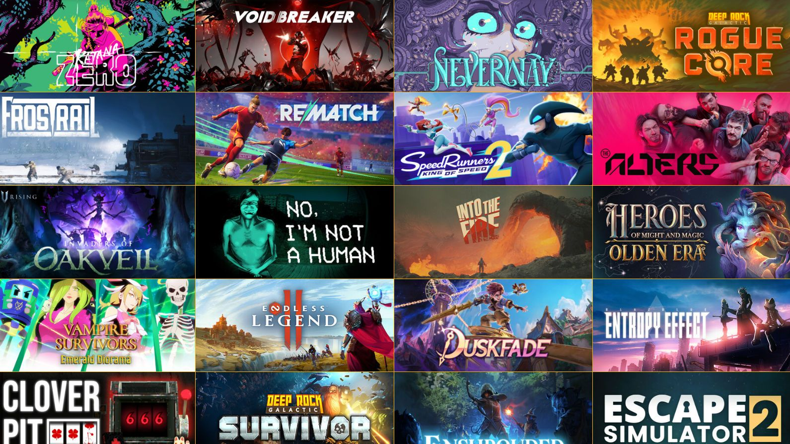

Updated: January 2026
Indie games continue to be the most creative corner of the industry — where unique mechanics, bold stories, and weird art directions find a home. For 2026, a handful of under-the-radar titles are already generating buzz. Below we highlight five to watch, with platform notes, why they stand out, and whether you should pre-order or wait for reviews.
1) Paper Gardens
A handcrafted adventure with a folding-paper visual language and clever puzzle design. Each area rearranges as you solve environmental puzzles, creating emergent platforming moments. Best on PC and Switch for the tactile controls.
2) Clockwork Canticle
A narrative-driven roguelite where songs power your abilities. It mixes rhythm with tactical combat, and the procedural songlines mean every run feels musically different. Great on mobile for bite-sized sessions, but shines on PC with a controller.
3) Neon Drift: Outskirts
An open-ended street racing sim with light RPG progression. The game focuses on small urban districts with handcrafted events rather than a single giant map. Expect strong mod support on PC and a solid controller experience on consoles.
4) Lanterns of the Fallen
A melancholic action RPG with a focus on exploration and relic-based progression. Lanterns introduces a stamina-light combat system that encourages exploration over grinding, and its soundtrack is already a standout.
5) Tiny Colony
A cozy colony sim where micro-encounters replace macro-management. It’s perfect for players who love systems but want a gentle pace. Ideal on mobile for short sessions and on PC for longer play.
How to pick which to try
- Story / mood: Paper Gardens, Lanterns of the Fallen
- Quick sessions: Clockwork Canticle, Tiny Colony
- Long-term play: Neon Drift: Outskirts